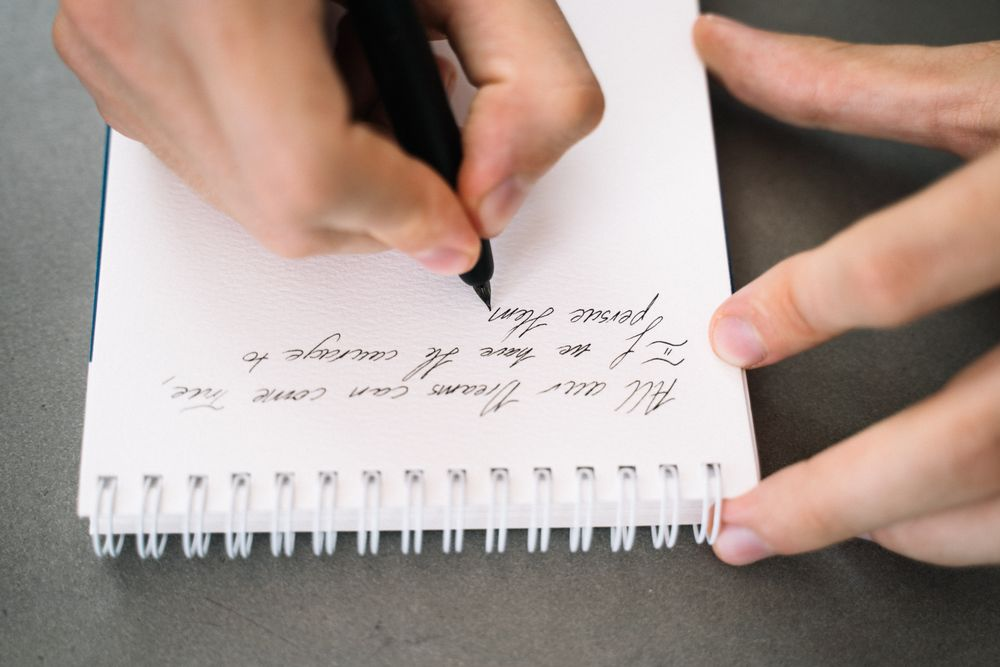

수행평가
영어 에세이 채점 기준표 — 학교 예시를 옮겨 수업에서 그대로 씁니다
| 항목 | 보는 것 | 배점 |
|---|---|---|
| Content | 주제문 · 근거 두 개 | 4 |
| Organization | 연결어 · 문단 순서 | 3 |
| Grammar | 시제 · 수 일치 · 관사 | 3 |
Winter term 레벨 테스트 상시 진행 중
For middle school
서술형과 수행평가,
쓰기로 준비하는 영어
Garojul Reading Track
영어 에세이 채점 기준표 — 학교 예시를 옮겨 수업에서 그대로 씁니다
| 항목 | 보는 것 | 배점 |
|---|---|---|
| Content | 주제문 · 근거 두 개 | 4 |
| Organization | 연결어 · 문단 순서 | 3 |
| Grammar | 시제 · 수 일치 · 관사 | 3 |
서술형에 자주 나오는 네 가지

Reading Track
반은 레벨 테스트로 정합니다. 학년보다 한 칸 앞이나 뒤에 배정될 수 있습니다.
Level test
매주 화 · 목 16:00 · 토 11:00전화로 시간을 잡아 주세요